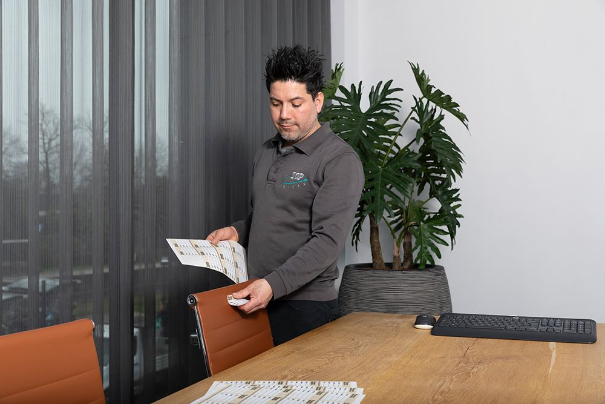
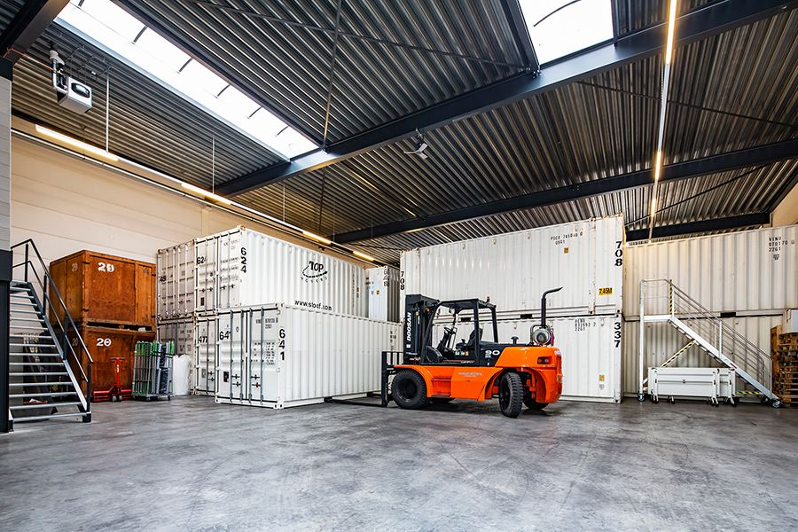
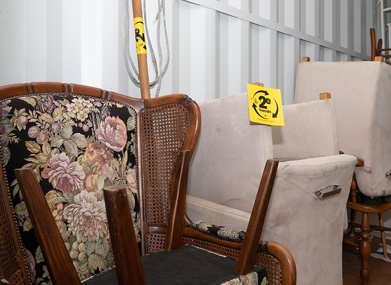

Hebben de meubels nog waarde? Maar gebruikt u zelf de meubels niet meer?
Inkoop en verkoop assets
- Online platform voor circulaire meubels
- Verkoop en inkoop van bestaand meubilair
- Transport, verhuizen en opslag als onderdeel van de dienstverlening

Assetmanagement
Het beheren van al uw assets in één overzicht: wij begrijpen dat. Met ons WMS en Meubelpaspoort brengen we niet alleen uw assets in kaart, maar minimaliseren we ook de CO₂-voetafdruk en dragen we bij aan een efficiëntere circulaire economie.
Contact opnemenHoe we te werk gaan
Zijn uw meubels overtollig? Hebben ze nog waarde en wilt u ze nog gaan gebruiken?
Opslag assets
Hebben de meubels nog waarde? Maar gebruikt u zelf de meubels niet meer?
Hebben de meubels in de huidige staat geen waarde meer?
Ontdek onze nieuwste dienstverlening en geniet van dagelijkse efficiëntie en complete ontzorging, dankzij één aanspreekpunt die altijd bereikbaar is. Dit begint natuurlijk bij een grondige inventarisatie, maar daar stopt het niet. Bij De Bresser geloven we in totale ontzorging, zodat u zich kunt focussen op wat écht belangrijk is.
Lees meerInventarisatie
Goede assetmanagement begint bij een grondige inventarisatie. Met een toegewijde en ervaren assetmanager aan uw zijde brengen we al uw assets nauwkeurig in kaart. Hierbij streven we ernaar om niet alleen uw operationele efficiëntie te verbeteren, maar ook om de CO₂-voetafdruk te minimaliseren en actief bij te dragen aan een efficiëntere circulaire economie. Met De Bresser kiest u voor een betrouwbare partner die zich richt op lange termijn samenwerking, waarbij onze expertise en toewijding garant staan voor een succesvolle en duurzame toekomst voor uw bedrijf.
Contact opnemenBij De Bresser gaan we verder dan alleen het inventariseren van assets; we beoordelen ze op diverse criteria om een duurzame aanpak te waarborgen. Ons proces omvat een zorgvuldige evaluatie van elke asset op verschillende niveaus:
We vernieuwen assets om hun levensduur te verlengen.
Geschikte assets worden hergebruikt om verspilling te verminderen.
Defecte assets worden gerepareerd om waarde te behouden.
We zoeken naar nieuwe toepassingen voor assets die niet meer voor hun oorspronkelijke doel kunnen worden gebruikt.
Onbruikbare assets worden gerecycled om grondstoffen terug te winnen.
Restmaterialen worden geëvalueerd voor energieterugwinning of waardeherwinning.
Met deze grondige benadering van assetbeoordeling streven we ernaar om uw bedrijf te helpen bij het realiseren van duurzame doelstellingen en bij te dragen aan een circulaire economie.
WMS en Meubelpaspoort
Met ons geavanceerde Warehouse Management System (WMS) worden al uw assets digitaal geregistreerd en beheerd voor realtime bewaking en beheer. Ons systeem biedt gedetailleerde rapportage inclusief CO₂-data, waardoor u inzicht krijgt in de milieuprestaties van uw assets. Daarnaast faciliteert het WMS inkoop en/of aanbod binnen de circulaire markt, waardoor we actief bijdragen aan een duurzamere toekomst met efficiëntie en minimalisatie van verspilling.
Contact opnemen
Het meubelpaspoort is een essentieel instrument binnen onze duurzame aanpak bij De Bresser. Met dit paspoort worden alle relevante gegevens van een meubelstuk gedocumenteerd, zoals materiaalsamenstelling, productiejaar en eventuele onderhoudshistorie. Hierdoor krijgen onze klanten volledig inzicht in de herkomst en levenscyclus van hun meubilair, waardoor ze weloverwogen beslissingen kunnen nemen over hergebruik, reparatie of recycling. Door het meubelpaspoort te integreren in ons assetmanagementproces, streven we naar een circulaire economie waarin waarde behouden blijft en verspilling wordt geminimaliseerd.
Ontdek onze nieuwste dienstverlening en geniet van dagelijkse efficiëntie en complete ontzorging. We digitaliseren alle assets in ons WMS systeem en houden een meubelpaspoort bij. Bij De Bresser geloven we in totale ontzorging, zodat u zich kunt focussen op wat écht belangrijk is.
Lees meerOntdek onze nieuwste dienstverlening en geniet van dagelijkse efficiëntie en complete ontzorging. Als er besloten is dat assets nog waarde hebben, kunnen we de assets opslaan. Bij De Bresser geloven we in totale ontzorging, zodat u zich kunt focussen op wat écht belangrijk is.
Lees meerOpslag assets
Onze regionale opslagfaciliteiten bieden een veilige en gecontroleerde omgeving voor uw assets, terwijl ons klantportaal u volledige controle en inzicht geeft in het beheer van uw opgeslagen goederen. Samen met u kijken we naar de houdbaarheid en looptijd van de opslag, zodat we altijd de meest effectieve oplossing kunnen bieden. Bovendien maken we gebruik van elektrische voertuigen voor een milieuvriendelijk transport van en naar onze opslaglocaties, waarmee we onze inzet voor duurzaamheid versterken.
Contact opnemen
Ontdek onze nieuwste dienstverlening en geniet van dagelijkse efficiëntie en complete ontzorging. Door bijvoorbeeld het vele thuis werken hebben bedrijven op het moment overtollig meubilair, tijdelijk of definitief. U kunt bij De Bresser deze meubels tijdelijk op 1 locatie op slaan en mocht er al meubilair definitief overtollig zijn, dan bieden wij de mogelijkheid aan om dit voor u op te kopen tegen eerlijke prijzen.
Lees meerInkoop en verkoop assets
Als meubels niet meer in gebruik zijn, bieden we bij De Bresser ook de mogelijkheid om ze een nieuw leven te geven door ze aan te bieden via ons online platform voor circulaire meubels. Ons brede assortiment van gebruikte meubelstukken biedt een eenvoudige en transparante oplossing voor zowel de verkoop als de inkoop van bestaand meubilair. Daarnaast bieden we volledige ondersteuning bij transport, verhuizingen en opslag, als integraal onderdeel van onze complete inventarisatiebeoordeling.
Contact opnemenOntdek onze nieuwste dienstverlening en geniet van dagelijkse efficiëntie en complete ontzorging. Dankzij één aanspreekpunt die altijd bereikbaar is. We dragen graag samen bij aan een duurzame toekomst, waar circulair meubilair en elektrische voertuigen de norm zijn. We gaan verder dan alleen uitvoering. Bij De Bresser geloven we in totale ontzorging, zodat jij je kunt focussen op wat écht belangrijk is.
Lees meerCirculair meubilair
In samenwerking met lokale milieustraten en kringloopwinkels zorgen we ervoor dat overgebleven of defect meubilair weer relevant wordt. Door middel van reparaties, renovaties en upcycling geven we meubels een nieuwe kans, waardoor we actief bijdragen aan het verminderen van afval en het bevorderen van een circulaire economie. Met ons revitalisatieprogramma streven we naar een duurzamere toekomst waarin waarde behouden blijft en verspilling wordt geminimaliseerd.
Contact opnemen
Heeft u vragen of wilt u een offerte? Neem dan contact met ons op en wij helpen u binnen 24 uur.
Wij helpen u binnen 24 uur. Dit heeft u ingevuld:
Uw e-mailprogramma is geopend met dit bericht aan info@debresser.nl. Kreeg u geen venster te zien? Gebruik dan de knop hieronder of bel 013 52 82 372.
+31 (0)13 52 82 372 · info@debresser.nl · Schijfstraat 13, 5061 KA Oisterwijk